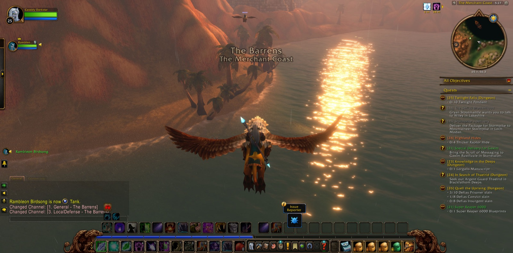
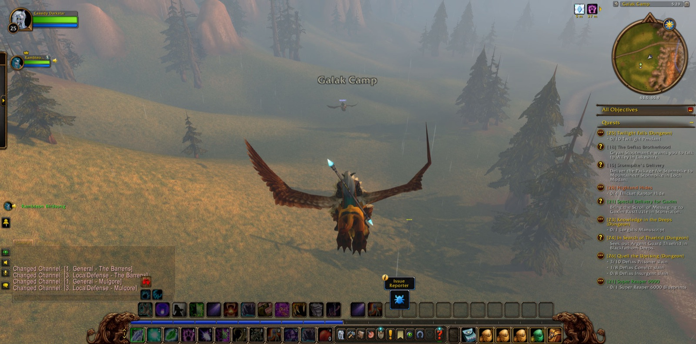

Cassidy Darkstar took up the road again in Westfall, among the Dagger Hills below Demont's Place, where the Defias Highwaymen held the ground. There he saw the errand called Thunderbrew to its end. For a short stretch Lucia the Paladin fought beside him, and between them they brought down the fifteen highwaymen that The People's Militia required. Then he went down into The Deadmines, and the way there was hard. Вольда the Hunter walked with him only a few steps. Abbigale the Hunter stayed longer, and Oldschool the Hunter came late to the deep work. Not every descent went as he had hoped, but in the end the Undead Dynamiters and Excavators fell. The four Miners' Union Cards were gathered for Collecting Memories, and Foreman Thistlenettle was overcome and his badge taken.


He returned to Sentinel Tower and gave account of the Militia. Then he passed by the Darkened Bank and Mirror Lake and came through the Valley of Heroes into Stormwind City. In the Dwarven District the badge and the cards were handed over, and there he came into fuller strength: he reached his twenty-fifth level and was named a Novice Druid. A picture was taken to mark it. Elwynn Forest called him next. At the Tower of Azora and Stone Cairn Lake he learned the fate of the lost guards, and he carried the medallions of Rolf and Malakai to Guard Thomas at the eastern bridge. Young Forest Bears and Prowlers were thinned for Protect the Frontier, and Thomas' Report was delivered in Goldshire. After that the Stormwind Armor Marker went to Sara Timberlain, and red linen bandanas were gathered at the Brackwell Pumpkin Patch.


From the Deepwater Tavern of the Lion's Pride Inn he came out into Menethil Harbor and into the Wetlands. At Angerfang Encampment Slyra the Warrior stood with him briefly against the Dragonmaw, and Nek'rosh's Gambit was accomplished. In Mosshide Fen he slew gnoll and mongrel until Tramping Paws was done, and he took an unruptured gland from a Leech Stalker for Alchemical Hazards. Many pictures were taken in that fen. He went north to Dun Modr, where the errand of its fall was ended and The Dark Iron War begun. He paused also at Ironbeard's Tomb.


Then he crossed the Great Sea to Darkshore and went south into Ashenvale and Astranaar. At Blackfathom Deeps Needsmo, a druid of his own calling, and Broven the Paladin went down with him among the Fallenroot and the tide priestesses. On the next crossing Rambleon the Hunter joined him, and the two kept company the longest of any that day. Together they went by Theramore Isle, Northwatch Hold, the Southern Barrens, Mulgore, Desolace and the Stonetalon Mountains, and came again to Ashenvale. In the Dor'Danil Barrow Den Cassidy overcame the Forsaken and won the Bottle of Disease. At Forest Song he delivered Shindrell's Note to Kayneth Stillwind. In Satyrnaar he freed a Highborne soul for The Tower of Althalaxx, and he pressed on as far as Xavian.


At the last, back in Menethil Harbor with Rambleon beside him, he found Nord'el, and the first errand of the Bloom of the Heavens was fulfilled. A second followed it: to bear Nord'el to Thundris Windweaver in Auberdine. He remembered that Sylessa had spoken of a boat in that harbour. So the road turned once more toward the sea.



